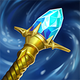
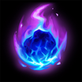
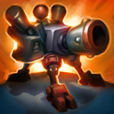
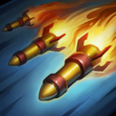
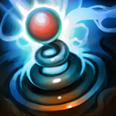

核心裝備
 黑焰火炬
黑焰火炬- 黎安卓的折磨

瑞萊的冰晶節杖 死亡之帽
死亡之帽 虛空之杖
虛空之杖
以下為本站 7.2d 校正後的標準配置；實戰仍需依敵方陣容調整。






技能優先：Q > W > E
靠近友方防禦塔或自己的砲臺時獲得額外跑速。

部署自動攻擊的砲臺；海默丁格技能命中英雄可加速砲臺蓄能射擊。

發射多枚微型火箭，集中命中同一目標時可造成更高爆發。
投擲手雷造成範圍傷害與緩速，中心命中會暈眩並充能砲臺。

強化下一個基礎技能，變成更強的砲臺、火箭齊射或多次彈跳手雷。
1技佈置砲臺 → 3技中心暈眩 → 2技集中火箭 → 砲臺雷射
先確保砲臺覆蓋目標，三技中心命中後接二技，能同時觸發多座砲臺蓄能雷射。
4技升級 → 強化1技砲臺 → 3技控制 → 2技輸出
物件區或守塔時使用強化砲臺建立陣地，再以三技和二技阻止敵人靠近。
4技升級 → 強化3技彈跳 → 1技補砲臺 → 2技收尾
需要遠距開戰時選擇強化三技，利用多次彈跳控制人群，再補砲臺與火箭。
不要把砲臺全部放在同一直線，使用三角形佈局覆蓋兵線與撤退路徑。三技中心暈眩命中後會讓砲臺快速蓄能，再接二技集中火箭完成爆發。
物件刷新前先進場佈置砲臺，迫使敵人先拆裝置再接戰。大絕依需求選擇：強化一技守區、強化二技秒殺、強化三技遠距開團與連續控制。
保持在砲臺陣地中利用被動跑速拉扯，敵方刺客進場時以三技反暈。陣地被清除後先後撤等待砲臺充能，不要在沒有裝置的情況下正面硬打。
對局名單是本站依英雄機制與目前配置整理的參考，不等同固定勝率。
中路優先處理爆發、控制與抗性問題；標準輸出核心不因單一威脅整套推翻。
觸發：對線或團戰有能直接貼近你的刺客／爆發核心，常在完成第一輪輸出前死亡。
中婭沙漏兼顧魔攻與物防，主動凝滯能直接避開致命爆發。
女妖面紗補魔防並提供法術護盾，可阻斷對方第一段開戰。
觸發：敵方有多個關鍵硬控，會讓你無法安全站位或施放完整連段。
女妖面紗的法術護盾能先擋一次關鍵技能，讓法師保留施法空間。
堅毅提供韌性，受到硬控時也能短暫提高雙防。
觸發：敵方前排多，團戰需要你持續處理高生命目標，而不是只秒後排。
標準配置已經有持續傷害／穿透或高生命處理能力。
觸發：敵方治療、吸血或回復讓你的消耗與爆發很難真正壓低血線。
黑魔禁書能由魔法傷害穩定施加重創，適合法師與軟輔處理大量治療。
觸發：敵方核心已經針對你的主要傷害類型堆高物防或魔防。
你不是隊伍主要穿透來源，或標準配置已經有足夠百分比穿透／削抗。
提醒：「坦克多」看的是高生命前排；「抗性高」則是對方已經明確堆高物防／魔防，兩種情境不一定相同。
7.2a 中路第二批正式版：技能名稱與核心機制依 Riot Games 台灣《激鬥峽谷》官方英雄頁校正；版本基準採官方 7.2 與 7.2a 更新公告。Tier、出裝、符文、對局與實戰節奏為本站依中路環境整理的綜合配置。｜v60：完整套用阿璃中路固定母版。
本站於 2026-08-27 依 Patch 7.2d 重新檢查此配置。 Tier、出裝、符文與對局屬於 Wild Rift Guide 的整理與分析，不是 Riot Games 官方推薦；版本改動後會再依官方公告與實戰資料校正。